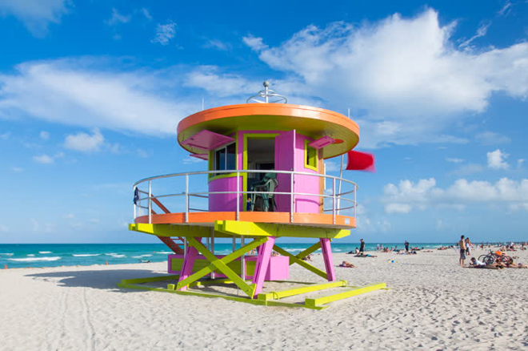
Arriving into Miami the first thing we noticed on the beach were the number and variety of lifeguard huts. Many were painted in bold colours and took their inspiration from the Art Deco buildings fronting South Beach.
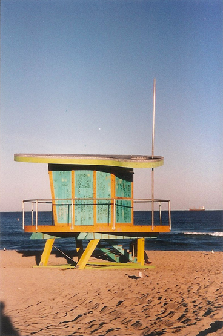
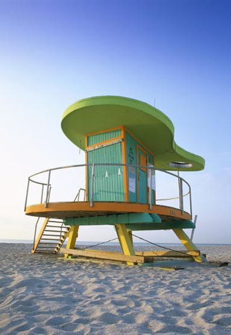
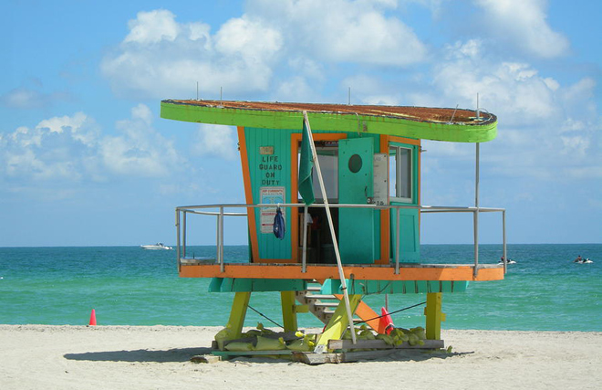
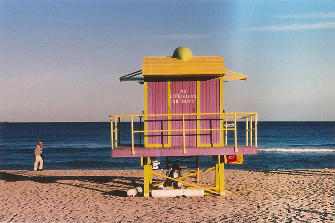
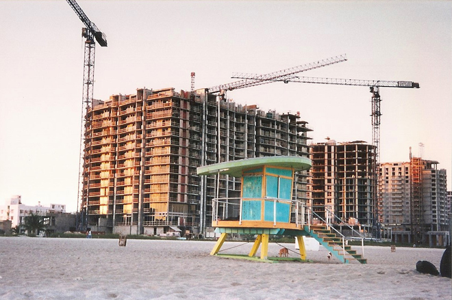
In the 1930s, an architectural revolution came to South Beach, bringing Art Deco architecture and giving it a legitimate claim to have the world's largest collection of Streamline Moderne Art Deco architecture. Napier, New Zealand, another notable Art Deco city, is architecturally comparable to Miami Beach as it was rebuilt in the Ziggurat Art Deco style after being destroyed by an earthquake in 1931.
While many of the unique Art Deco buildings, such as the New Yorker Hotel, were lost to developers in the years before 1980, the area was saved as a cohesive unit by Barbara Baer Capitman and a group of activists who spearheaded the movement to place almost one square mile of South Beach on the National Register of Historic Places.
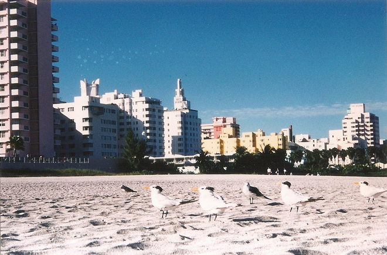
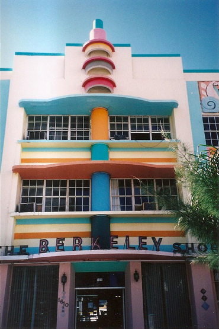
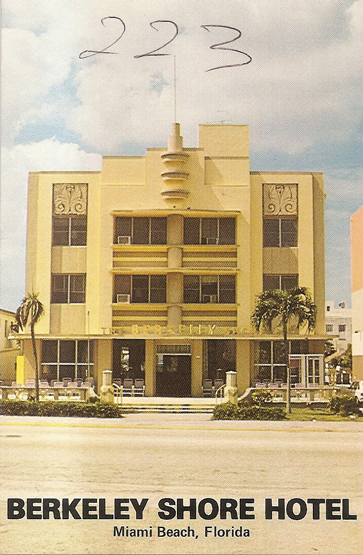
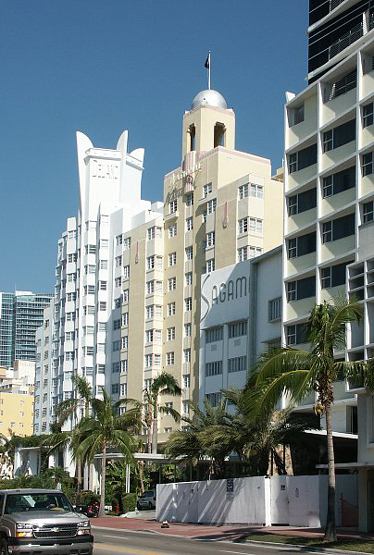
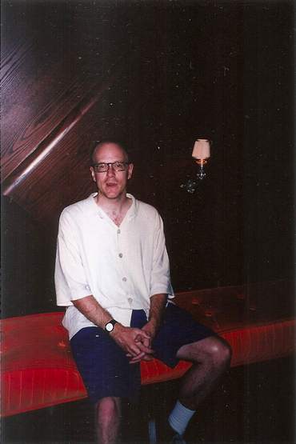
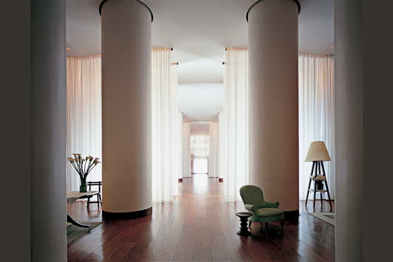
That evening found us at Escuelita - a fabulous gay salsa and merengue venue. We sat a table marked 'reserved' for much of the evening but, at ten minutes to midnight, a party of outrageous characters (drag queens, an ex Miss Venezuela etc) arrived and the handsome party leader asked if we could move, but could he buy us a drink to say thank you. He was Enrique Iglesias ...
We danced all night, won a lifelong membership to the club in a raffle (it closed two years after we were there so it wouldn't have done us any good) and then retired to Wolfie's deli (as featured in Elmore Leonard's novel Rum Punch) for a slap-up breakfast and to soak up the alcohol.
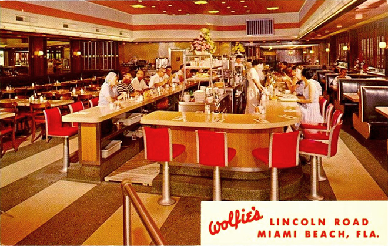
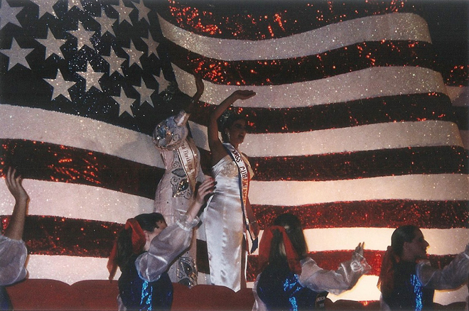
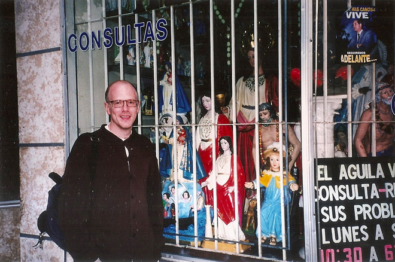
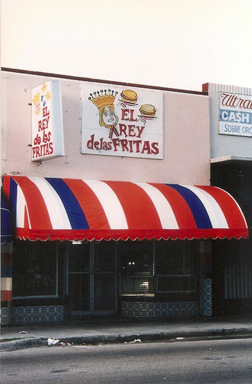
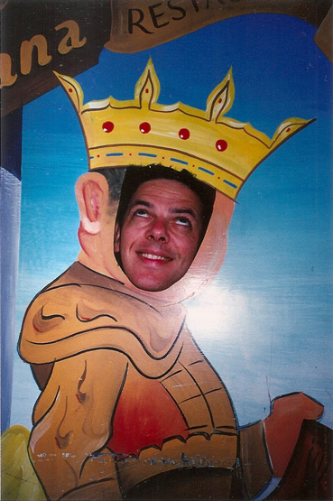
Finally we stopped at Casa Casuarina, Gianni Versace's opulent mansion where he was gunned down by his lover. In a remarkable lapse of taste, I posed dead on the steps of the mansion before being moved on by an armed policeman who wasn't amused ...
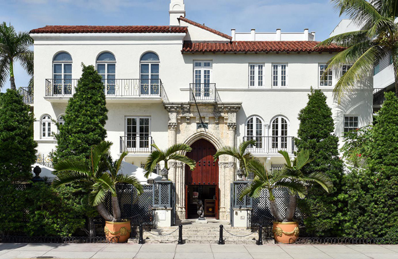
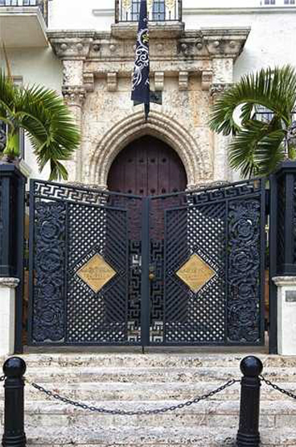
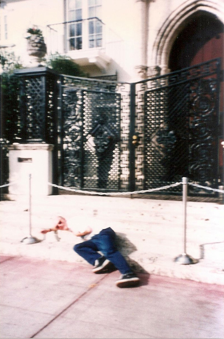
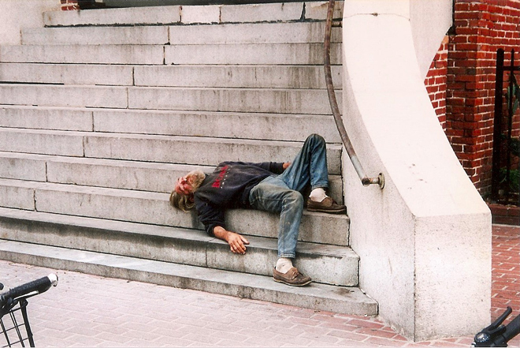